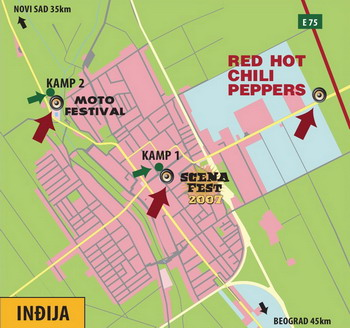

Nedelja popodne u Inđijanopolisu (i utorak uveče)
Kako je u Inđiji i na mestu dešavanja koncerta dva dana ranije? Mala Yahti ekspedicija rano tropsko nedeljno popodne provela u poseti ovom gradiću i ovoj livadi.
Već od table na ulasku u Inđiju vidi se da je mesto malo drugačije od ostalih. Naime, ispod imena grada je internet adresa, www.indjija.net.
Parkiramo se u centru. Idemo u glavnu šetališnu ulicu, mislim da se zove Radomira Putnika. Na nekim reklamnim transparentima vidim da se sada zove The Fun Street. Osim regularnih kafića, tu se sada postavljaju ulični barovi, pune se frižideri i zalihe pored. Pivo će, za one koji budu išli i u grad, biti Jelen i Becks, koliko smo videli na par mesta, a vode su uglavnom hrvatske, Jana i Jamnica, zašto, ko bi znao? Na kraju tu ulice je Kulturni centar Inđija, internet kafe je ovih dana dostupan besplatno. Na ulici su namešteni, ali još nisu potpuno spremni, razni dušeci, oni bi trebalo da doprinesu tom The Fun Street utisku, biće fudbal u plitkoj vodi i druge stvari, ne znam koje tačno.
U jednom kafeu u vrlo dobroj hladovini malo smo iskulirali, prijatno je, jedino su cene festivalske, pivo i šveps 300 dinara.
Posle okrepljenja idemo do jednog od nekoliko info puntova. Tu rade dve devojčice iz Stare Pazove, to je mesto u blizini, prolazi se kad se ide starim putem, vrlo simpatično. One su nam dale materijal i neka uputstva, pa smo pošli na tu livadu. U stvari, prvo smo ustanovili gde je železnička stanica, za opciju dolaska vozom. Od stanice se ide jednim putićem kroz polja, merenje pokazuje da do ulaska na mesto dešavanja ima oko 4,5 kilometara.
E sad. Informacija sa zvaničnog sajta od pre neki dan da koncert može odmah da počne nije baš potpuno tačna. Od danas do utorka organizatori će imati dosta da rade, ulazi nisu gotovi, stubovi za ozvučenej se tek postavljaju, kao i bina. Parking je, bar za sada, jedna šljunkom posuta površina, tako da opcija rezervacije parking mesta preko sajta, koja je postojala do pre nekog vremena, ne znam kako će funkcionisati. A ni inače. Prostor gde će biti koncert je poveliki, ali se bina vidi, vide se i ljudi na njoj (radnici). Valjda će biti i nekih skrinova. Ima dosta toaleta i barova u najavi.
I tako. Kad smo sve to pogledali i proučili i islikali (fotografije će biti verovatno sutra) vratili smo se autoputem (napravljen je novi prilaz od auto puta do mesta koncerta).
Kako je najbolje stići tamo meni lično je još uvek nejasno, posebno u varijanti nas zaposlenih. Đaci, studenti i ostali slobodni umetnici mogu lepo i opušteno doći pre podne i zabaviti se u gradu ili već negde (čujem da imaju dobar bazen).
Videćemo šta će biti i kako u utorak.
update:
Fotografije su sad postavljene ovde
update 2:
Red Hot Chili Peppers provod
Nasa ekipa se organizovala kao nikada do sada. Oko 17.30 nalazimo se sa troje punih kola na parkingu..gde..blizu aerodrom, mislim. Idemo na auto-put Beograd-Zagreb. Tu nam se pridruzuju Lj. i X koji su stigli iz VA. Idmeo tim putem, a onda se iskljucujemo na prethodno proucene staze via Popinci-Pecinci-Golubinci. Parkiramo se u Indjiji, u blizini autobuske stanice i idemo ka mestu koncerta. Temperatura je pala za jedno 10 stepeni, duva vetric, idealno. U masi pesacimo tih 5 km. Sve je cool. Koncertna arena je super organizovana, uspevamo da uglavnom ostanemo na okupu, tu su i drugari koji su stigli sa druge strane. Jedno gubljenje dela ekipe prevazilazimo tako sto muskarci dizu Mandaru, a ona narandzastu jaknu u vis. Koncert: Cule su se bar neke stvari kojima sam se nadala, energija je solidna, ali je to daleko od najboljeg koncerta ikad i zauvek REM u februaru 2004. Koncert je naravno prekratak, ali NaciLu koja je proucila ne znam koliko set lista na njihovim prethodnim nastupima, snimke itd. kaze da je sve bilo kao i svugde. Sto ne znaci da je to dovoljno. Ali, to je tako. Naravno da se ocekivalo vise od njih, pa i od atmosfere ali, kao sto rekoh, to je tako.
Na izlasku pocinje jaka kisa. Uspela sam da kupim kabanicu za sebe i jos jednu rokerku, vrlo fensi-smensi sa nacrtanom devojcicom na ledjima koja kaze Good Morning. Jedini problem je sto je kabanica decija, tj. samo do struka. Put do Indjije je nocna mora: Kisa, blato, guzva, hladno, vetar, umor. Dolazimo u kola mokri. Ali tu vec pocinje bolji deo, oblacimo suve stvari, palimo grejanje i potpuno praznim putem kojim smo i dosli stizemo u BGD u pola tri.
Zahvaljujuci tome sto je celo nase drustvo bilo zajedno i u dobrom raspolozenju, onda svim avanturistickim momentima, pa i cinjenici da smo RHCP na kraju videli, pa kako godi, bice ovo dogadjaj za pamcenje i prepricavanje.
Sad jos samo da se nekako oslobodim onih par kilograma blata sa patika, pantalona i carapa
Komentari
Moja teorija je da sa hrvatskim vodama mogu da postignu veću cenu, ali to i ne mora biti tako
la lara | 24.06.07 20:09
Kitten4Eva | 24.06.07 21:34
elektrokuhinja | 25.06.07 05:57
 ubipacijentic | 26.06.07 00:52
ubipacijentic | 26.06.07 00:52
etotako | 26.06.07 08:08
Točeno "Jelen" pivo 0.5 l 100 din
Hrvatska voda 0.5 l 100 din
pa zar nji'ova voda da bude ko nase pivo majku im j(*)m u{@-+}u
 RSS feed
RSS feed
 sadržaji se objavljuju pod
sadržaji se objavljuju pod
Komentari
Zbog tehničkih problema komentari stigli do početka jula 2007. su sada u okviru teksta
Yahti | 01.08.07 18:44